Hon’ble Minister Shri Sanjay Dhotre
then Union Minister of State for Human Resource Development, Communications, Electronics & Information Technology
Government of India
Bharat AI Innovation grows out of the Data Science Congress, the conference Aegis School of Data Science has run since 2015. Union Ministers opened it, the Reserve Bank's Chief Data Officer spoke at it, and the chief data scientists of Jio, Flipkart, VISA, NVIDIA, IBM and Fractal argued their fields out on its stage. These are the people who came before.
Ministers, senior civil servants and policy leaders who opened and framed the Congress.
then Union Minister of State for Human Resource Development, Communications, Electronics & Information Technology
Government of India
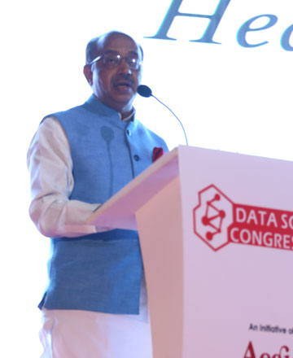
then Minister of State for Statistics & Programme Implementation
Government of India
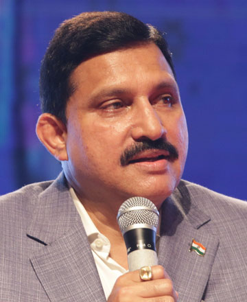
then Minister of State for Science & Technology and Earth Sciences
Government of India

Chief Architect of India’s First Data Protection Bill
Supreme Court of India
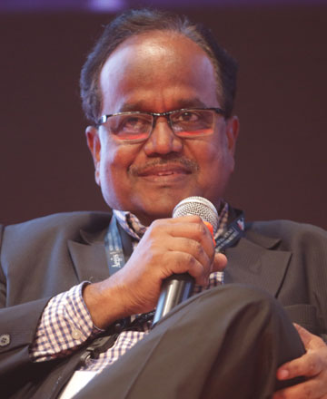
Special Chief Secretary & IT Advisor to the Chief Minister
Government of Andhra Pradesh
Joint Secretary, National Security Council Secretariat (NSCS)
Government of India
Head — Data Analytics Cell
NITI Aayog, Government of India
Director — Data Management & Dissemination (Chief Data Officer)
Reserve Bank of India
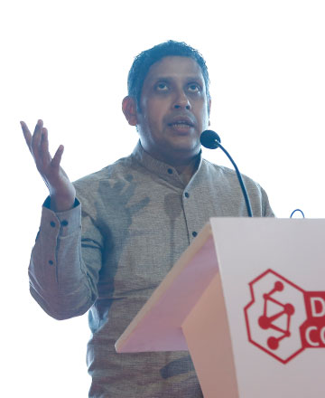
Chairman — Data Analytics Department
Indian National Congress
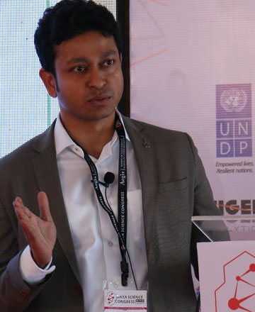
Consultant
United Nations Development Programme
The researchers and academics who built the field and taught it.
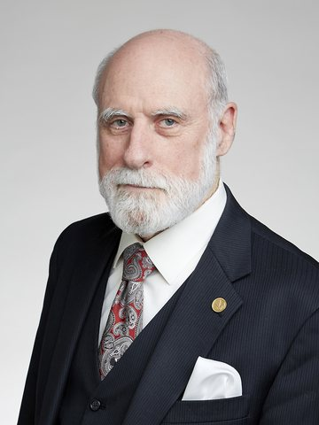
Father of the Internet & Co-Creator of TCP/IP
Father of Modern Artificial Intelligence
IDSIA · KAUST
AI Researcher and Founder, Campaign Against Killer Robots
UNSW Sydney
AI Technology Executive
IBM Fellow
Chairman
National Assessment and Accreditation Council (NAAC)
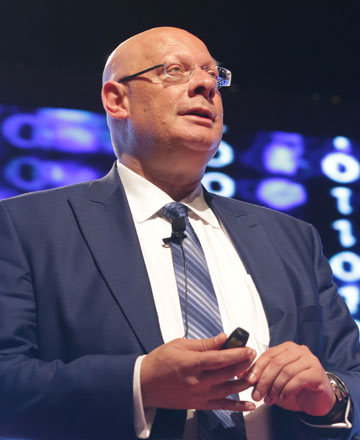
World’s First Chief Data Officer
Yahoo! · Open Insights
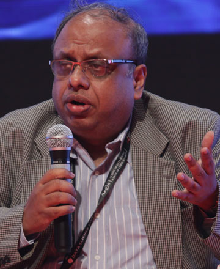
Chief Technologist & Head — Telecom & Mobile Research
IBM India Research Lab
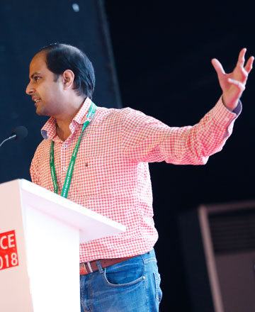
Principal Applied Scientist
Microsoft
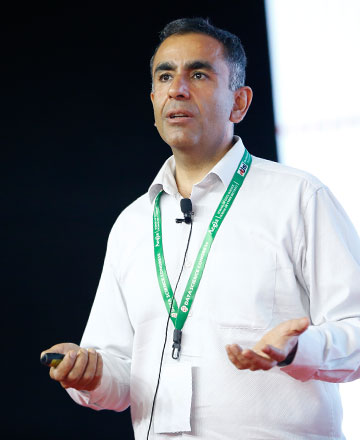
SVP — Voice Intelligence
Samsung Research
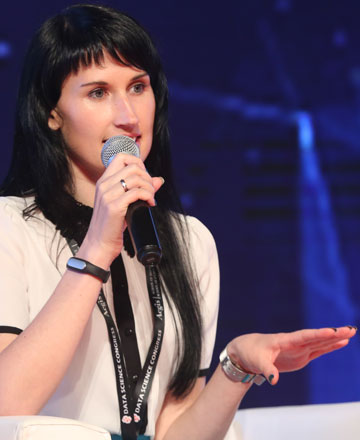
Data Scientist
V.I.Tech
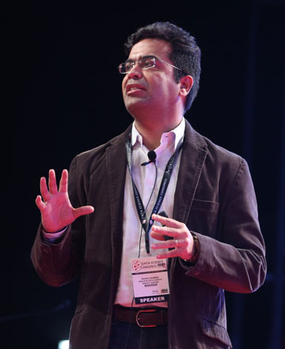
Principal Data Scientist
Hewlett Packard Enterprise
Sr. Principal Data Scientist
CA Technologies
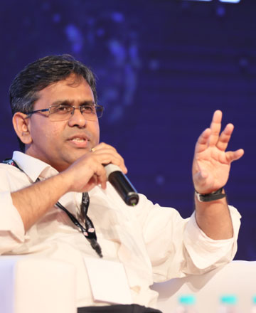
Director — Cognitive Computing
IBM
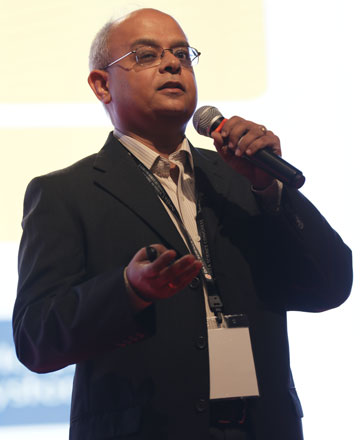
Director, Aegis School of Data Science & Adjunct Professor
IIT Bombay
Dean
Aegis School of Data Science
Entrepreneurs building India’s data and AI product companies.
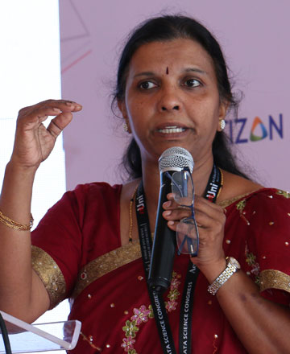
Co-founder & CEO
NIRAMAI Health Analytix
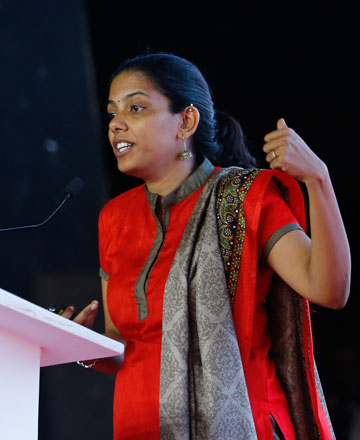
Co-founder & COO
Niramai
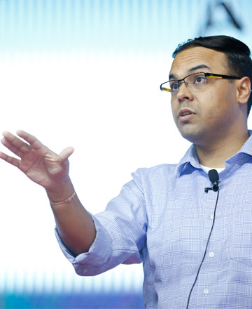
Co-founder & CEO
Uniphore
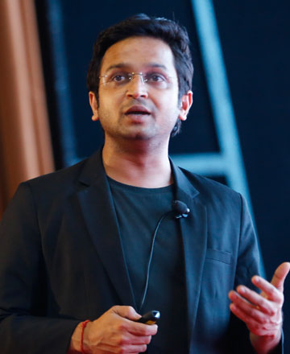
Founder & CEO
Locus
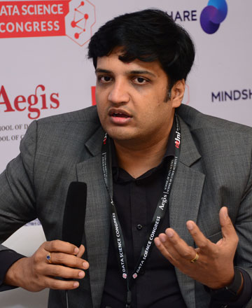
Founder
Analytics Vidhya
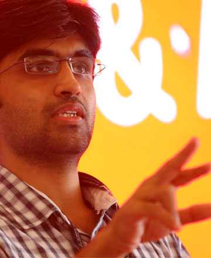
Co-founder & CTO
Huew
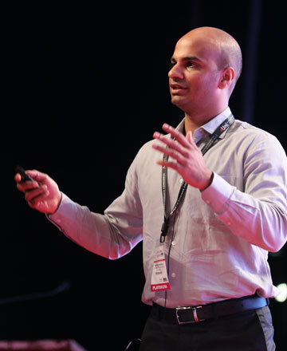
Co-founder
Tiger Analytics
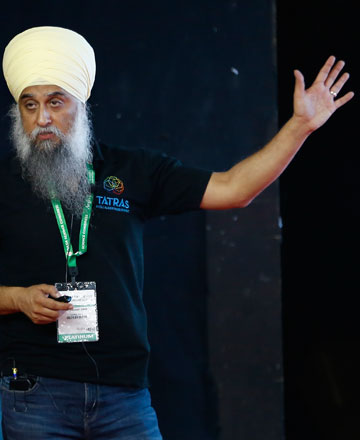
Co-founder & Chief Data Scientist
Tatras Data
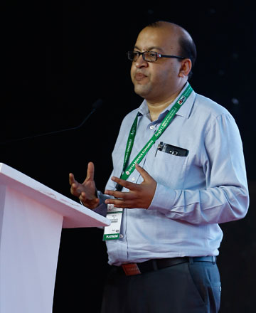
Co-founder & COO
Pentation Analytics
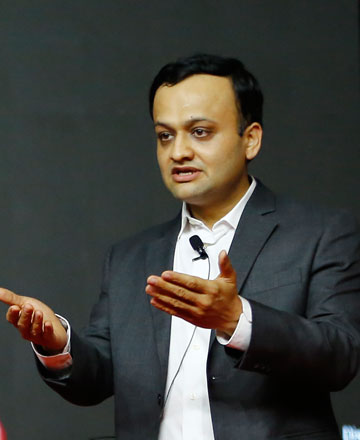
Founder & CEO
vPhrase
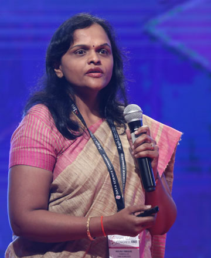
Founder
Tarah AI
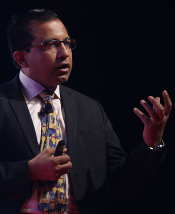
Founder & CEO
Gaia Smart Cities
CEO
Lymbyc
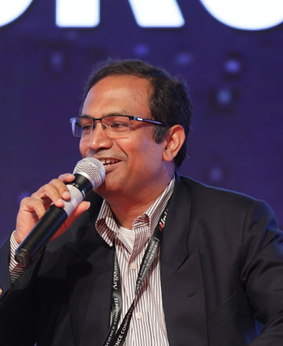
CEO
LatentView Analytics
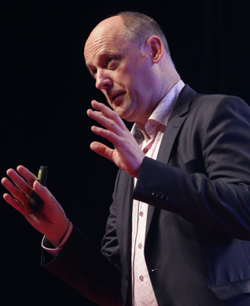
CEO
Unlimit by Reliance
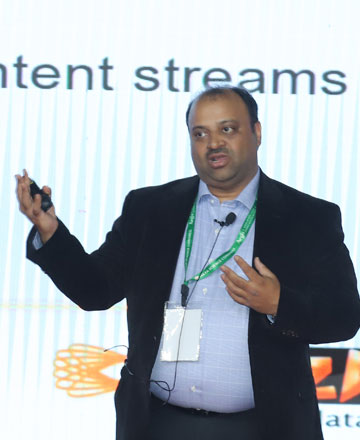
CTO
EzDataMunch
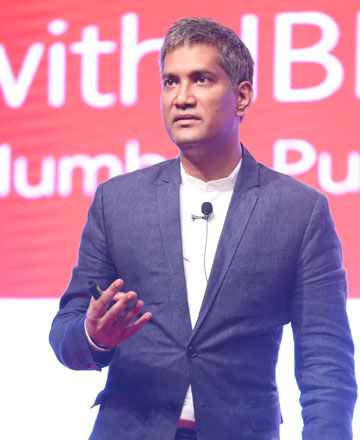
CEO
Aegis School of Data Science
Chief data scientists and analytics heads from India’s largest enterprises.
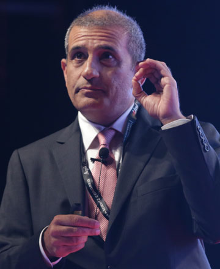
Managing Director
NVIDIA South Asia
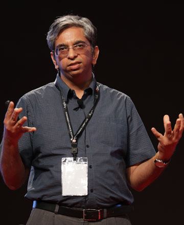
Chief Data Scientist
Jio
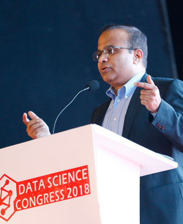
Chief Data Scientist
Airtel X Labs
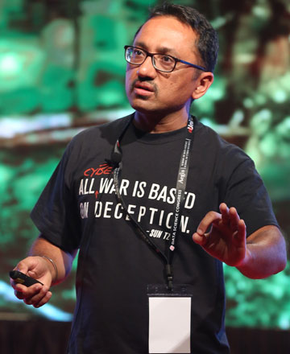
Chief Data Scientist
Acalvio Technologies
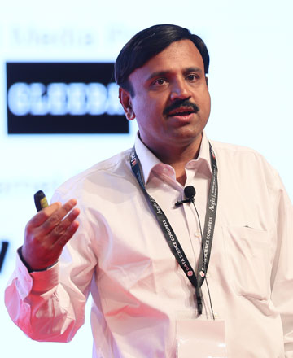
Vice President & Head — Analytics
Flipkart
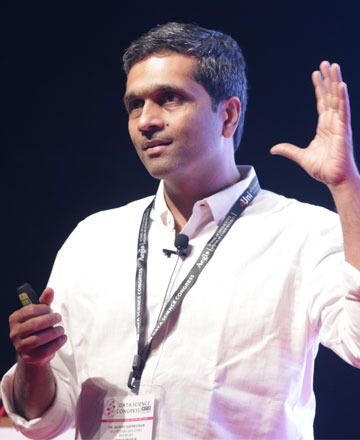
Vice President — Data Science
MakeMyTrip
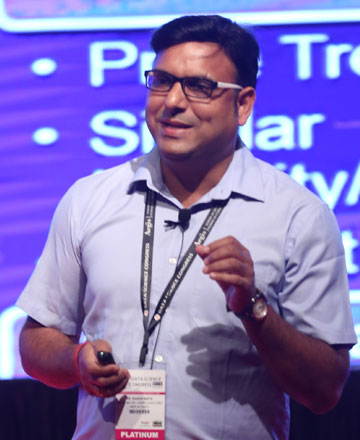
Director — Machine Learning & Data Science
American Express
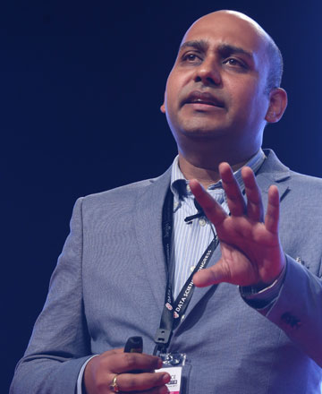
Sr. Director — Data Products
VISA
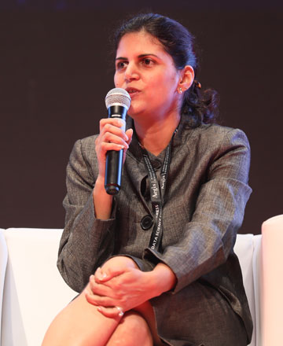
Data Science Leader
Walmart Labs
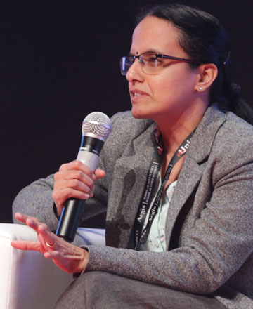
VP — Engineering & Analytics
Myntra
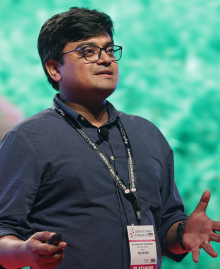
Director of Data Science — Fractal Products
Fractal Analytics
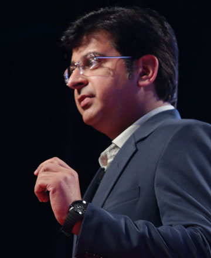
Chief Strategy Officer
Fractal Analytics
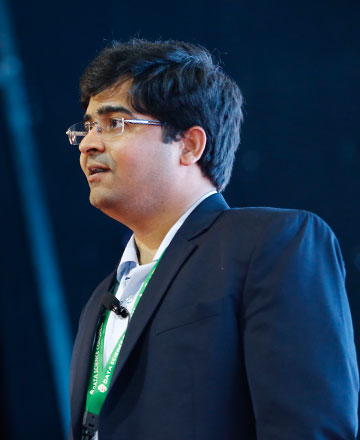
VP — Data Science & AI
CreditVidya
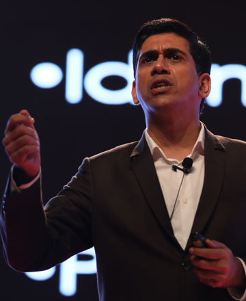
CTO — Insights, AI & Data
Capgemini India
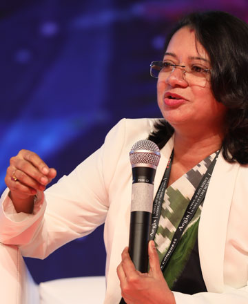
Practice Leader — Cognitive, Big Data & Advanced Analytics
IBM India
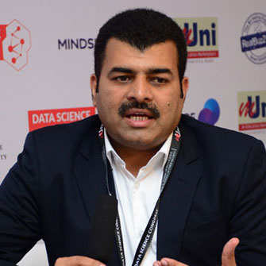
Head — Data Science
Vodafone Idea
Chief Evangelist
SAP
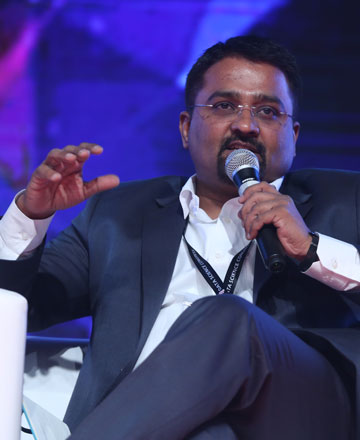
Country Head
Tableau
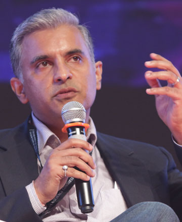
CTO
Manthan
CTO — Telecom
Tech Mahindra
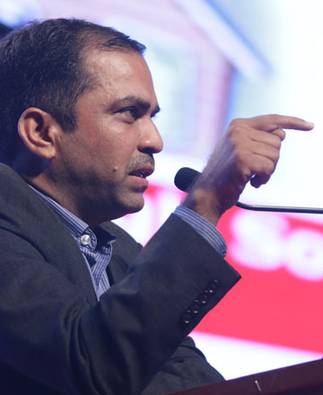
Author, National Security Expert & Deputy CTO
Tech Mahindra
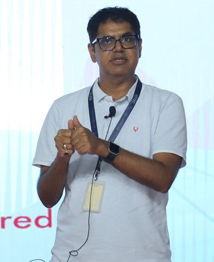
CTO
Flytxt
VP & CIO
Arvind Lifestyle Brands
SVP — IT
Reliance Industries
Managing Director
Deloitte India
Managing Director & Co-Head — India Analytics
PwC
Vice President — Client Delivery
Cartesian Consulting
Chief Information Security Officer
HDFC Bank
Head — Data Labs
HDFC Life
Group Executive VP — Credit Info & Analytics
Yes Bank
Head — Client Insights
RBL Bank
SVP & Head — Analytics
Bajaj Allianz Life
Chief Data Officer
SBI General Insurance
Head of Analytics
ManipalCigna Health Insurance
EVP — Big Data & Data Science
Star India
Head — Analytics
Viacom18
Head — BI & Advanced Analytics
Idea Cellular
Head — Data Science
Oxigen Services
Business Unit Executive
IBM Security
Regional Sales Director
Fortinet
Telecom Analytics Specialist
Smartfren · Jio
Editors, people leaders and educators shaping the conversation around the technology.
Senior Assistant Editor
The Economic Times
Senior Editor, Writer & Columnist
formerly Hindustan Times
Chief People Officer
Fractal Analytics
HR Leader
IBM
Head — HR
Atos
Head — Leadership Learning
Tech Mahindra
Program Manager — Career Education, India & South Asia
IBM
Director
mUniversity
No speakers match that search. Try a company or a job title.
Portraits come from the Data Science Congress archive, except the following, which are used under their respective Creative Commons licences:
Bharat AI Innovation 2026 brings 5,000+ researchers, founders, CXOs and policymakers to the World Trade Center Mumbai on 20–21 November. Visitor passes are free.